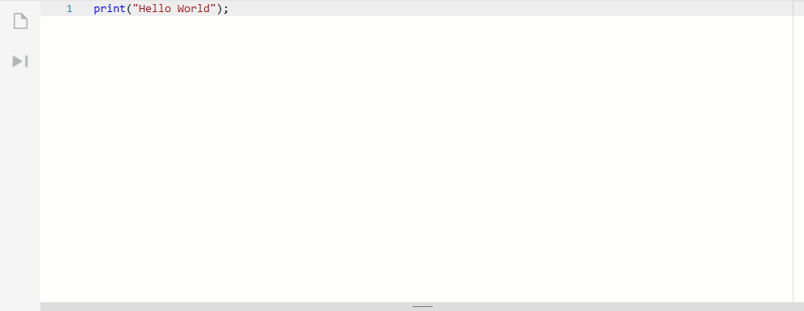
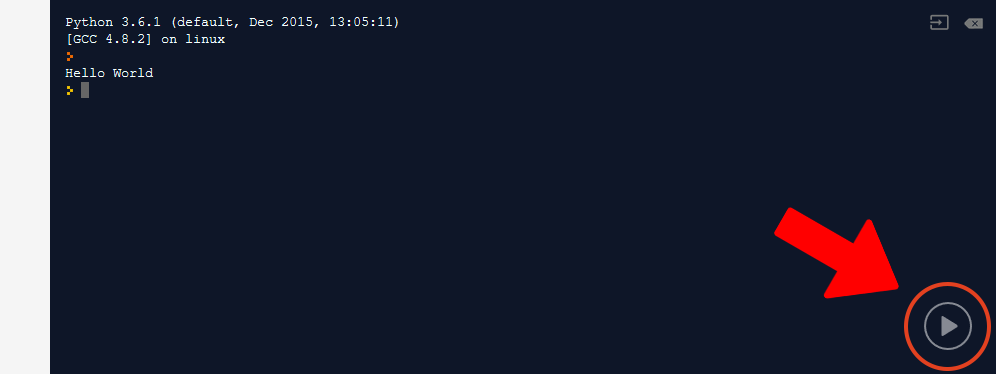

Python is known as a "high level" programming language. This means that the language is closer to English (as we know it), compared to "lower level" programming languages, which are like machine code or assembly language. Python was created in the late 1980s as a successor to the ABC language. The language's core philosophy is: Beautiful is better than ugly, explicit is better than implicit, simple is better than complex, complex is better than complicated and that readability counts. You'll understand this more if you get into the language. Python is great for beginners because of its simplicity and readability.
Below are some Python programming tutorials, and an interactive programming environment at the bottom for you to interact with Python, without having to install any software. How great is that?
Type your code in here...
And press this highlighted button to run your code:
Easy :D
NB: At peak time, the environment may take some time to load. Anything you do here may not be saved, so please make a copy of it before you leave.